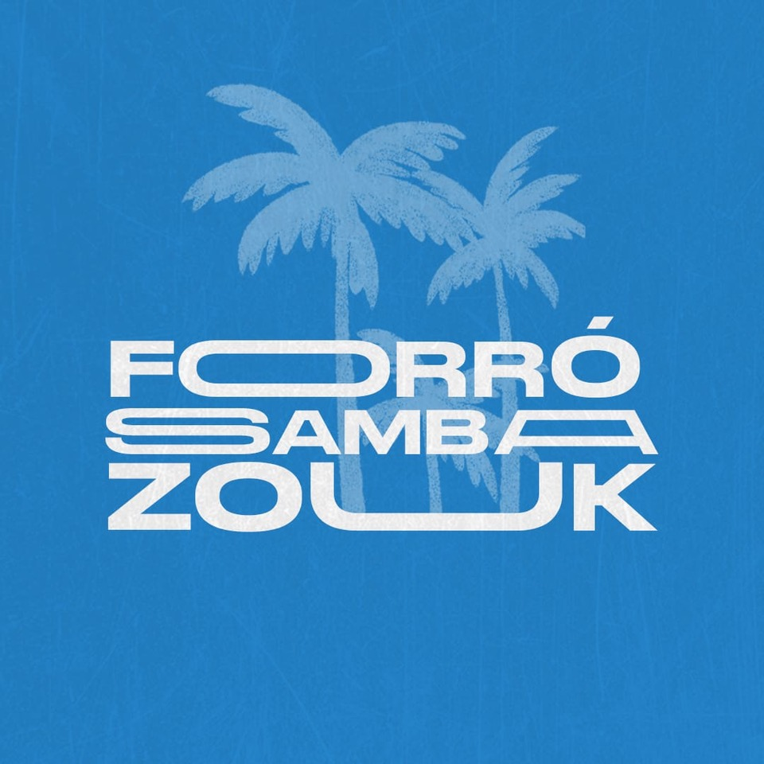
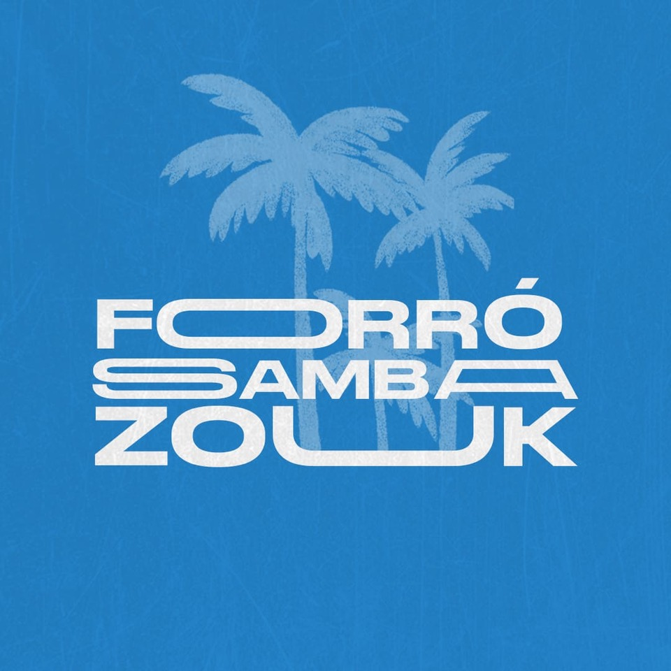

parties. .ch
April
.ch
April
📅 *Upcoming parties in April in Zürich*
🔸 Zouk Club Interm. (Thursdays)
🔸 Zouk Out (Fridays)
Up to date calendar: http://parties.swisszouk.ch
parties..ch
May
📅 *Upcoming parties in May in Basel*
🔶 Basel Zouk Practis (Sun, May 28)
📅 *Upcoming parties in May in Genève*
🔶 Zoukalicious (Thu, May 4)
🔶 Forró Samba Zouk (Sat, May 6)
📅 *Upcoming parties in May in Zürich*
🔶 Zouk Mood (Sun, May 7)
🔶 Zoukaloo Party (Sat, May 13)
🔶 Lamba Night (Sun, May 14)
🔶 Zouk Prime (Sat, May 20)
🔶 Bürklizouk (Sun, May 21)
🔶 Zouk Affair (Sun, May 28)
🔸 Zouk Practica Open (Mondays)
🔸 Zouk Club Interm. (Thursdays)
🔸 Zouk Out (Fridays)
Up to date calendar: http://parties.swisszouk.ch
parties..ch
June
📅 *Upcoming parties in June in Genève*
🔶 Zoukalicious (Sat, Jun 10)
📅 *Upcoming parties in June in Zürich*
🔶 Zouk Mood (Sun, Jun 4)
🔶 Lamba Night (Sun, Jun 11)
🔶 Bürklizouk (Sun, Jun 11)
🔶 Zouk Prime (Sat, Jun 17)
🔶 Zouk Affair (Sun, Jun 25)
🔸 Zouk Club Interm. (Thursdays)
🔸 Zouk Out (Fridays)
🔸 Zouk Practica Open (Mondays)
Up to date calendar: http://parties.swisszouk.ch


 
